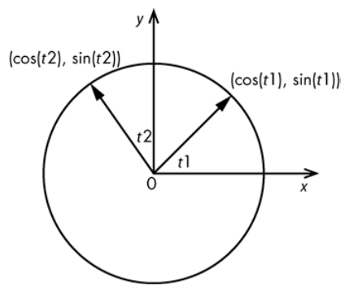
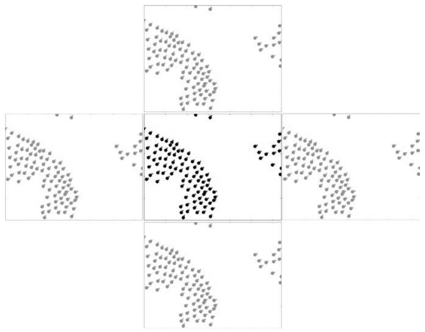
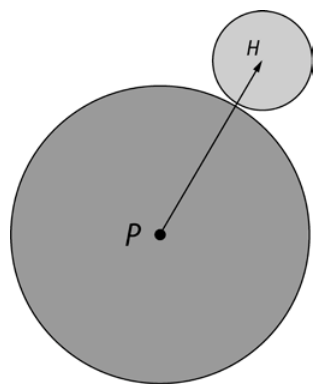
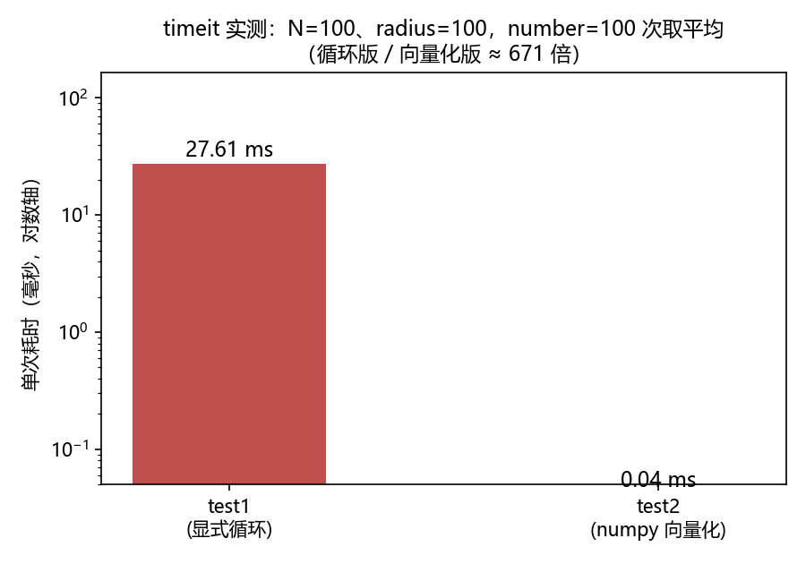
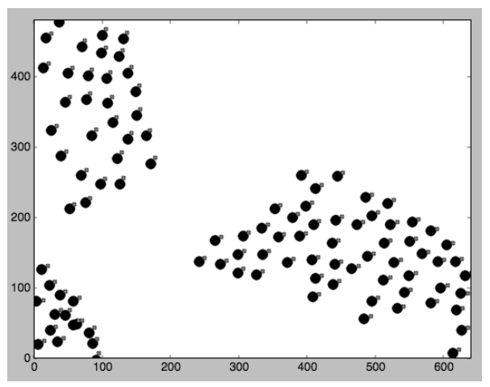
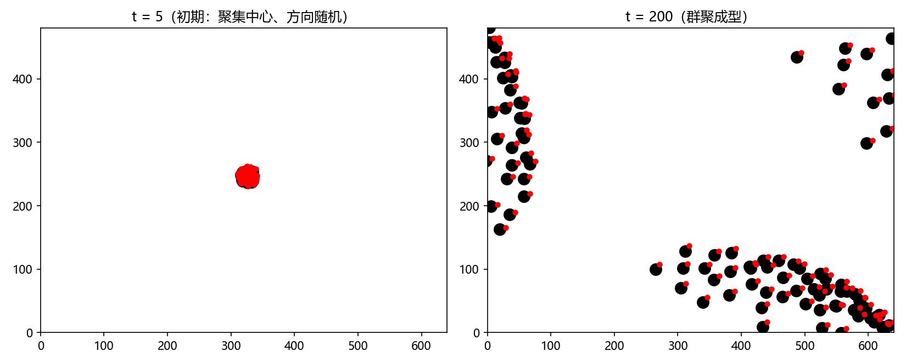

第 5 章 类鸟群：仿真鸟群#
本章解决：一群鸟没有指挥官，为什么能整体盘旋、遇扰散开又重新集结？Craig Reynolds 的类鸟群（Boids）模型证明：只靠三条局部规则——分离、列队、内聚——就能让 N 个个体涌现出真实的群体行为。本章用 numpy 把这三条规则写成"零循环"的矩阵运算，并用 matplotlib 做出可交互（点击加鸟、右键驱散）的动画。 承上启下：第 3 章的生命游戏已经用上 numpy 数组和 matplotlib 动画，但那是离散网格；本章把 numpy 推到连续空间的 N 体模拟，是全书"numpy 向量化"最重要的一章——
squareform(pdist)、布尔矩阵乘法、整组数组操作的思路在后面的图像与性能相关章节还会反复出现。
📓 章代码：nb/ch05.ipynb（分节代码；ch01–08 含固定种子实跑输出，ch09–14 为完整实现待硬件环境）
仔细观察一群鸟或一群鱼：群体由个体生物组成，但作为一个整体似乎有它自己的生命。鸟群中的鸟在移动、飞越和绕过障碍物时彼此相互定位；受到打扰或惊吓时会破坏编队，随后重新集结，仿佛被某种更大的力量控制。
1986 年，Craig Reynolds 创造了鸟类群体行为的一种逼真模拟，称为类鸟群（Boids）模型。关于类鸟群模型，值得注意的是：只有 3 个简单的规则控制着群体中个体间的相互作用，但该模型产生的行为类似于真正的鸟群。类鸟群模型被广泛研究，甚至被用来制作群体的计算机动画——如电影《蝙蝠侠归来》（1992）中的行军企鹅。
本项目将利用 Reynolds 的 3 个规则，创建一个类鸟群，模拟 N 只鸟的群体行为，并画出随着时间推移它们的位置和运动方向；还会提供向鸟群中添加个体的方法，以及一种驱散效果，用于研究群体的局部干扰。类鸟群被称为N 体模拟（N-body simulation），因为它模拟了 N 个粒子的动态系统，彼此之间施加作用力。
5.0 本章导图#
5.1 工作原理#
模拟类鸟群的三大核心规则如下：
- 分离（separation）：保持类鸟个体之间的最小距离；
- 列队（alignment）：让每个类鸟个体指向其局部同伴的平均移动方向；
- 内聚（cohesion）：让每个类鸟个体朝其局部同伴的质量中心移动。
类鸟群模拟也可以添加其他规则，如避开障碍物，或受到打扰时驱散鸟群（5.3.6 节和 5.7 节）。这个版本的类鸟群在模拟的每一步中，实现了这些核心规则：
- 对于群体中的所有类鸟个体，做以下几件事：应用三大核心规则；应用所有附加规则；应用所有边界条件；
- 更新类鸟个体的位置和速度；
- 绘制新的位置和速度。
如你所见，这些简单的规则创造了一个鸟群，它具有演变的复杂行为。
5.2 所需模块#
| 模块 | 用途 |
|---|---|
| numpy 数组 | 保存类鸟群的位置和速度 |
| matplotlib | 生成类鸟群动画 |
| argparse | 处理命令行选项 |
| scipy.spatial.distance | 计算点之间的距离（squareform、pdist、cdist） |
拓展：为什么选 matplotlib 而不是 OpenGL
原书特意说明：选择 matplotlib 是为了简单和方便。要尽可能快地绘制数量庞大的类鸟群，应该用类似 OpenGL 这样的库——本书第三部分（第 9～11 章）会详细探讨。matplotlib 每帧重画整幅图的机制撑起几百个个体绰绰有余，但上千个体的实时模拟就得靠 GPU 了。
5.3 代码#
开发的顺序：先计算类鸟群的位置和速度；再设置边界条件、看如何绘制类鸟群、实现类鸟群模拟规则；最后为模拟添加有趣的事件——添加个体和驱散鸟群。
5.3.1 计算类鸟群的位置和速度#
模拟开始时，将所有类鸟群个体大致放在屏幕中央，速度设置为随机的方向：
# ===== 书 5.3.1 节：初始位置与速度 =====
import math
import numpy as np
width, height = 640, 480 # 模拟窗口的宽度和高度
N = 100
pos = [width/2.0, height/2.0] + 10*np.random.rand(2*N).reshape(N, 2)
# np.random.rand(2*N)：2N 个 [0,1] 随机数的一维数组
# reshape(N, 2)：变成 N 行 2 列——每行是一个个体的 (x, y) 偏移
# [width/2, height/2] 是 1×2 列表，numpy 广播规则把它加到 N×2 数组的每一行
# → 所有位置聚集在窗口中心 10 像素半径内
angles = 2*math.pi*np.random.rand(N) # N 个随机角度，范围 [0, 2π]
vel = np.array(list(zip(np.sin(angles), np.cos(angles))))
# 每对 (sin t, cos t) 是单位圆上的一点 → 模为 1.0、指向随机的单位速度矢量
位置数组的生成依赖 numpy 的广播（broadcasting）规则：1×2 的数组加到 N×2 的数组的每个元素上——第 1 章 kNN 里 np.tile 做的"复制对齐"工作，这里一条 + 就完成了。
速度的生成用到一个几何小技巧：给定一个角度 t，数字对 \((\cos t, \sin t)\) 位于半径为 1.0、中心在原点的圆上。从原点到圆上一点画一条线，就得到一个单位矢量，它取决于角度；随机选择角度，就得到随机方向的单位速度矢量（图 5.1）。

原书还演示了 zip() 的作用——它把两个列表合并成一个元组的列表：
# ===== 书 5.3.1 节：zip 演示（Python 3 版） =====
>>> list(zip([0, 1, 2], [3, 4, 5]))
[(0, 3), (1, 4), (2, 5)]
Python 3 适配：zip() 返回迭代器
原书在 shell 里直接写 zip([0, 1, 2], [3, 4, 5]) 就回显 [(0, 3), (1, 4), (2, 5)]——这是 Python 2 的行为，Python 2 的 zip 返回列表。Python 3 的 zip 返回迭代器，必须用 list(zip(...)) 才能看到内容；直接 np.array(zip(a, b)) 会因迭代器无法确定形状而报错。本章代码 np.array(list(zip(np.sin(angles), np.cos(angles)))) 中的 list() 就是为此而加，删掉就跑不通。
两条数组建好后，模拟开始时的画面是：类鸟群盘旋在屏幕中心，指向随机的方向。
5.3.2 设置边界条件#
鸟儿飞翔在无际的天空，但类鸟群必须在有限的空间中运动。第 3 章的 Conway 生命游戏用环形边界条件包住网格；这里采用平铺小块边界条件（tiled boundary conditions）——实际上是第 3 章边界条件的连续空间版本。
把类鸟群模拟想象成发生在一个平铺的空间：如果类鸟个体离开一个小块，它将从相反的方向进入相同的小块。区别在于，生命游戏发生在离散网格上，类鸟群则在连续区域移动。图 5.2 展示了这些小块边界条件：看中间的小块，飞出右侧的鸟儿正进入右边的小块，但该边界条件确保它们实际上通过平铺在左边的小块，又回到了中心的小块——顶部和底部同理。

# ===== 书 5.3.2 节：applyBC——平铺小块边界 =====
def applyBC(self):
"""apply boundary conditions"""
deltaR = 2.0 # 微小的缓冲区
for coord in self.pos: # 遍历每个个体的 (x, y)
if coord[0] > width + deltaR: # 越过右缘（含缓冲）
coord[0] = -deltaR # 从左缘外一点点重新进入
if coord[0] < -deltaR: # 越过左缘
coord[0] = width + deltaR
if coord[1] > height + deltaR: # 越过下缘（y 向下增长）
coord[1] = -deltaR
if coord[1] < -deltaR: # 越过上缘
coord[1] = height + deltaR
如果 x 坐标比小块的宽度大，就将它设置回小块的左侧边缘。该行中的 deltaR 提供了一个微小的缓冲区：它允许类鸟个体稍稍移出小块之外（屏幕可见区域外 2 个单位）才开始从相反方向回来——折返发生在屏幕外，观众看不到"原地消失又出现"的跳变，视觉效果更好。左侧、顶部和底部边缘执行类似的检查。
5.3.3 绘制类鸟群#
要生成动画，需要知道类鸟个体的位置和速度，并有办法在每个时间步骤中表示位置和运动方向。
1．绘制类鸟个体的身体和头部。 用 matplotlib 和一点小技巧：把每个类鸟个体画成两个圆（图 5.3）——较大的圆代表身体，较小的圆表示头部。点 P 是身体的中心，H 是头部的中心，按公式 \(H = P + k \times V\) 计算 H 的位置，其中 V 是类鸟个体的速度，k 是常数。这样在任何给定时间，头部都指向运动的方向——比只画身体更能说明个体往哪里飞。

# ===== 书 5.3.3 节：身体与头部标记（main() 中的初始化） =====
fig = plt.figure()
ax = plt.axes(xlim=(0, width), ylim=(0, height))
pts, = ax.plot([], [], markersize=10, c='k', marker='o', ls='None')
# pts：身体标记——黑色实心圆，大小 10；ls='None' 表示不连线
beak, = ax.plot([], [], markersize=4, c='r', marker='o', ls='None')
# beak：头部（喙）标记——红色小圆，大小 4
anim = animation.FuncAnimation(fig, tick, fargs=(pts, beak, boids),
interval=50)
# 每 50 毫秒调用一次 tick，即约 20 帧/秒；fargs 把额外参数传给回调
原书笔误：注释错位
原书正文说"在③行为动画窗口添加鼠标按钮事件"，但代码里标 ③ 的那一行是 animation.FuncAnimation(...)——它创建的是动画对象，与鼠标事件无关。鼠标事件的注册（mpl_connect）在 5.3.5 节和 5.4 节完整代码里才出现。按原书完整代码理解即可。
2．更新类鸟个体的位置。 动画开始后，每帧更新身体和头部的位置：
# ===== 书 5.3.3 节：更新头部位置 =====
vec = self.pos + 10*self.vel/self.maxVel
# 头部位置 = 身体位置 + 速度方向上的一段位移
# 10*self.vel/self.maxVel：把速度归一化到 [0, maxVel] 再放大 10 倍
# → 位移与速度成正比，最大 10 个单位，确定了喙和身体之间的距离
beak.set_data(vec.reshape(2*self.N)[::2], vec.reshape(2*self.N)[1::2])
# reshape(2*N) 把 (N,2) 数组摊平成 [x0,y0,x1,y1,...]
# [::2] 取偶数位（全部 x），[1::2] 取奇数位（全部 y）→ set_data 更新坐标
[::2] 从速度列表中选出偶数元素（x 轴的值），[1::2] 选出奇数元素（y 轴的值）——matplotlib 的 set_data 只吃一维 x、y 序列，这个"摊平再切片"的技巧让一次调用更新所有个体。
拓展：k 的实际取值
对照公式 \(H = P + kV\) 与代码 10*self.vel/self.maxVel，有 \(k = 10/\text{maxVel} = 5\)（maxVel = 2.0，见 5.3.8 节）。位移长度 \(= 10 \cdot |V|/\text{maxVel} \le 10\)：飞得快的个体头离身体远一点，悬停的个体头贴着身体。原书说"在速度方向上增加 10 个单位的位移"，严格说是"最大 10 个单位、与速度大小成正比"。
5.3.4 应用类鸟群规则#
现在是本章最核心的部分：在 Python 中实现类鸟群的 3 个规则。用"numpy 的方式"完成——避免循环，利用高度优化的 numpy 方法。
先看分离规则（rule #1）的向量化版本：
# ===== 书 5.3.4 节：test2——分离规则的向量化实现 =====
import numpy as np
from scipy.spatial.distance import squareform, pdist, cdist
def test2(pos, radius):
# get distance matrix
distMatrix = squareform(pdist(pos))
# pos 是 (N, 2) 位置数组；pdist 算出所有点对的距离（N(N-1)/2 个），
# squareform 把它们排成 N×N 对称矩阵
# apply threshold
D = distMatrix < radius
# 布尔阈值：距离小于 radius 的点对记 True——D[i,j] 为 True 表示
# 个体 j 是个体 i 的"邻居"
# compute velocity
vel = pos*D.sum(axis=1).reshape(N, 1) - D.dot(pos)
return vel
第一步：两两距离矩阵。 squareform() 和 pdist()（scipy 库中定义）计算一组点之间两两的距离——从数组中任意取两点，计算距离，对所有可能的两点对都这么做。例如 3 个点意味着 3 种可能的两点对：
# ===== 书 5.3.4 节：3 点例子 =====
>>> import numpy as np
>>> from scipy.spatial.distance import squareform, pdist
>>> x = np.array([[0.0, 0.0], [1.0, 1.0], [2.0, 2.0]])
>>> squareform(pdist(x))
array([[0. , 1.41421356, 2.82842712],
[1.41421356, 0. , 1.41421356],
[2.82842712, 1.41421356, 0. ]])
squareform() 给出 3×3 矩阵，其中项 \(M_{ij}\) 给出点 \(P_i\) 和 \(P_j\) 之间的距离（对角线是 0，矩阵对称——本笔记已实跑验证，输出与原书一致）。
第二步：布尔阈值矩阵。 基于距离筛选这个矩阵，用同样的 3 点例子：
>>> squareform(pdist(x)) < 1.4
array([[ True, False, False],
[False, True, False],
[False, False, True]])
< 比较针对距离小于给定阈值（这里是 1.4）的所有距离对设置矩阵的项。这种紧凑的方式表达了你想要的结果，更接近实际的思考方式——"哪些点是我的邻居"。
第三步：一行矩阵式算出分离速度。 在 ③ 行的方法有点复杂，拆开看：
D.sum(axis=1)：按行对矩阵中的 True 值求和——第 i 行的和是个体 i 的邻居个数 \(k_i\)（含自身，因为对角线 \(D_{ii} =\) True）。求和结果是 N 个值的一维数组（形状(N,)），reshape(N, 1)把它变形成(N, 1)，这样才能与位置数组广播相乘；pos * D.sum(axis=1).reshape(N, 1)：把每个个体的位置乘以自己的邻居数；D.dot(pos)：布尔矩阵与位置矢量的矩阵点积——第 i 行结果 = 所有邻居（True 列）位置矢量之和。
两式相减，对个体 i 得到：
其中 \(N_i\) 是个体 i 的邻居集合。每一项 \(pos_i - pos_j\) 都是指向"远离邻居 j"方向的位移矢量——分离规则就是"把所有远离邻居的位移加起来"。自身那一项 \(pos_i - pos_i = 0\) 自动抵消，所以对角线的 True 不影响结果。
test1、test2 与 timeit：约 200 倍的差距。 上面这种写法（书里叫 test2）比"普通写法"（test1）小得多，但它真正的优势是速度。test1 用显式双层循环逐对检查距离、累加位移（原书中文版未印 test1 的清单，本笔记按 test2 的数学等价重建如下，实测与 test2 结果最大相差 \(10^{-12}\) 量级）：
# ===== test1：显式循环版（本笔记按 test2 的数学等价重建） =====
def test1(pos, radius):
N = len(pos)
vel = np.zeros((N, 2))
for i in range(N):
for j in range(N):
if norm(pos[i] - pos[j]) < radius: # j 是 i 的邻居
vel[i] += pos[i] - pos[j] # 累加"远离 j"的位移
return vel
用 Python 的 timeit 模块比较两种方法的性能（代码写在 Python 解释器中，假设 test1、test2 及常量在 test.py 中；timeit 的第二个参数是每个计时循环前执行的安装代码）：
>>> from timeit import timeit
>>> timeit('test1(pos, 100)', 'from test import test1, N, pos, width, height',
number=100)
7.880876064300537
>>> timeit('test2(pos, 100)', 'from test import test2, N, pos, width, height',
number=100)
0.036969900131225586
在作者的计算机上，没有循环的 numpy 代码比使用显式循环的代码快约 200 倍！但为什么呢？它们不是差不多都是一回事吗？
原因在于：作为一种解释型语言（interpreted language），Python 天生就比 C 语言这样的编译语言慢——循环体的每一行都要由解释器逐条执行。numpy 库提供了高度优化的数组操作方法（底层是 C 和 Fortran），带来了 Python 的方便和几乎与 C 相等的性能。
拓展：numpy 效果最好的姿势
原书点题的一句话：如果重新组织算法，每次操作整个数组，不要循环单个元素来进行计算，这样 numpy 的效果最好。test2 正是这个姿势：pdist 一次性算完 \(N^2/2\) 个距离（C 循环），D.dot(pos) 一次性完成邻居加权求和（BLAS 矩阵乘），Python 层面只剩 3 条语句。本笔记在实测环境（N=100、radius=100、number=100）重做了同样的对比：test1 单次 27.6 ms、test2 单次 0.04 ms，差距约 670 倍（图 5.6）——机器更快了，但"整组操作"与"逐元素循环"的鸿沟反而更明显。

三条规则组装：applyRules()。 下面的方法利用前面讨论的 numpy 技术应用全部 3 个规则：
# ===== 书 5.3.4 节：applyRules——三规则的向量化实现 =====
def applyRules(self):
# apply rule #1: Separation
D = self.distMatrix < 25.0 # 分离阈值：25 单位内的算邻居
vel = self.pos*D.sum(axis=1).reshape(self.N, 1) - D.dot(self.pos)
self.limit(vel, self.maxRuleVel) # 限速（见 5.3.8 节）
# distance threshold for alignment (different from separation)
D = self.distMatrix < 50.0 # 列队/内聚用更大的半径 50
# apply rule #2: Alignment
vel2 = D.dot(self.vel) # 所有邻居的速度之和
self.limit(vel2, self.maxRuleVel)
vel += vel2
# apply rule #3: Cohesion
vel3 = D.dot(self.pos) - self.pos # 指向邻居质心的矢量
self.limit(vel3, self.maxRuleVel)
vel += vel3
return vel
三条规则共用同一个"邻居矩阵"D，只是阈值不同，每条一行矩阵式：
- 分离（25.0）：即 test2 的公式——每个个体都被"推离"相邻个体一定距离；
- 列队（50.0）：
vel2 = D.dot(vel)是 50 个单位半径内所有相邻个体速度之和，随后被限制在一个最大值内。这样，任何给定的个体都会受到指定半径内个体的平均速度影响，并据此列队——利用紧凑的 numpy 语法做这种计算，让事情变得简单、快捷； - 内聚（50.0）：
vel3 = D.dot(pos) − pos为每个个体增加一个速度矢量，指向一定半径内相邻个体的重心或几何中心。推导：\(D \cdot pos\) 的第 i 行是"自身 + 所有邻居"的位置之和，减去 \(pos_i\) 后剩下邻居位置之和 \(\sum_{j \ne i} pos_j\)——它正好等于（邻居数 × 邻居质心），方向即从个体指向局部质心，长度被 limit 压到上限以内。
limit() 在每条规则之后立即调用：没有这项检查，规则速度会随着每个时间步骤累加增加，模拟将失控（限速机制的实现见 5.3.8 节）。
拓展：邻居集合里包含"自己"
对角线 \(D_{ii}\) 恒为 True（距离 0 小于任何正阈值），所以三条规则的邻居集合都含自身，但处理方式各不相同：分离的自身项在相减中自动抵消；内聚显式减去 \(self.pos\)；列队则把自身速度也计入求和——这只略微加强自己当前的方向，且总和随后被 limit 封顶，不破坏行为。另外注意分离半径（25.0）小于列队/内聚半径（50.0）："先躲开贴身的，再跟随远处的"——这正是鸟群既紧凑又不相撞的原因。
5.3.5 添加个体#
三条核心规则会让类鸟群展示出群聚行为。在模拟过程中添加一个个体，看看表现如何。下面的代码创建一个鼠标事件，让你点击鼠标左键添加一个个体——个体将出现在光标的位置，具有随机指定的速度。
# ===== 书 5.3.5 节：注册按钮事件 =====
# add a "button press" event handler
cid = fig.canvas.mpl_connect('button_press_event', buttonPress)
# mpl_connect() 向 matplotlib 画布添加一个按钮按下事件；
# 每次在模拟窗口按下鼠标时，buttonPress() 都会被调用
# ===== 书 5.3.5 节：buttonPress——左键加鸟（Python 3 版） =====
def buttonPress(self, event):
"""event handler for matplotlib button presses"""
# left-click to add a boid
if event.button == 1: # 左键（原书写作 event.button is 1）
self.pos = np.concatenate((self.pos,
np.array([[event.xdata, event.ydata]])),
axis=0) # 把光标位置 (x, y) 追加为一行
# generate a random velocity
angles = 2*math.pi*np.random.rand(1)
v = np.array(list(zip(np.sin(angles), np.cos(angles))))
self.vel = np.concatenate((self.vel, v), axis=0) # 追加随机单位速度
self.N += 1 # 类鸟群计数加 1
event.xdata、event.ydata 给出鼠标在坐标轴中的位置，np.concatenate(..., axis=0) 把这个点作为新行追加到位置数组——新个体从"光标处 + 随机方向"加入群体，随后的帧里它会自然融入群聚。
Python 3 适配：is 比较字面量
原书写 if event.button is 1:。is 比较的是对象身份而不是值，靠 CPython 对小整数的缓存才"碰巧"工作；Python 3.8 起对字面量使用 is 会直接给出 SyntaxWarning: "is" with a literal，语义上也不该这么写。必须改为 event.button == 1。下一节的 event.button is 3（右键）同理改为 == 3。
5.3.6 驱散类鸟群#
三条模拟规则保持类鸟群在移动时成为一个群体。群体受到惊扰时会发生什么？为此引入一种"驱散"效果：在 UI 窗口中单击右键，群体就会分散。可以把它理解为群体面对突然出现的捕食者的反应，或突然出现的一声巨响。它是 buttonPress() 方法的延续：
# ===== 书 5.3.6 节：右键驱散（Python 3 版） =====
# right-click to scatter boids
elif event.button == 3: # 右键（原书写作 event.button is 3）
# add scattering velocity
self.vel += 0.1*(self.pos - np.array([[event.xdata, event.ydata]]))
# (N,2) 位置减 (1,2) 点击点：广播出"从点击点指向每个个体"的矢量
# 乘 0.1 缩小后加到速度上——每个个体获得一个远离干扰点的分量
改变每个个体的速度：在干扰出现点（点击位置）的相反方向上增加一个分量。最初类鸟群将飞离该点，但三规则随后胜出，类鸟群将作为群体再次会聚——一个展示"涌现行为鲁棒性"的天然实验。
5.3.7 命令行参数#
main() 用熟悉的 argparse 模块处理命令行选项（与第 1、2 章同款套路）：
# ===== 书 5.3.7 节：--num-boids 选项 =====
parser = argparse.ArgumentParser(description="Implementing Craig
Reynolds's Boids...")
# add arguments
parser.add_argument('--num-boids', dest='N', required=False)
args = parser.parse_args()
# set the initial number of boids
N = 100
if args.N:
N = int(args.N)
# create boids
boids = Boids(N)
选项 --num-boids 的 dest='N' 让解析结果存进 args.N；给了就用给定的个体数，没给默认 100 只。之后创建 Boids 对象，交给动画与事件系统。
5.3.8 Boids 类#
Boids 类代表整个模拟：处理初始化、更新动画并应用规则。
# ===== 书 5.3.8 节：Boids 类与超参数 =====
class Boids:
"""class that represents Boids simulation"""
def __init__(self, N):
"""initialize the Boid simulation"""
# initial position and velocities
self.pos = [width/2.0, height/2.0] + 10*np.random.rand(2*N).reshape(N, 2)
# normalized random velocities
angles = 2*math.pi*np.random.rand(N)
self.vel = np.array(list(zip(np.sin(angles), np.cos(angles))))
self.N = N
# minimum distance of approach
self.minDist = 25.0 # 最小接近距离（分离半径）
# maximum magnitude of velocities calculated by "rules"
self.maxRuleVel = 0.03 # 规则计算出的速度的最大模
# maximum magnitude of the final velocity
self.maxVel = 2.0 # 最终速度的最大模
初始化与 5.3.1 节完全一致，另存了三个关键超参数：
| 超参数 | 值 | 作用 |
|---|---|---|
| minDist | 25.0 | 分离规则的距离阈值（注意：applyRules 里硬编码 25.0，见下） |
| maxRuleVel | 0.03 | 三条规则各自算出的速度分量的模上限 |
| maxVel | 2.0 | 最终速度（三规则累加后）的模上限 |
原书代码的死角：minDist 定义了但没用
__init__ 里定义了 self.minDist = 25.0，但 applyRules() 中写的是硬编码的 D = self.distMatrix < 25.0（还有列队阈值 50.0）——改 minDist 对模拟毫无影响，必须改 applyRules 里的字面量。想调参数的话，把这两处改成 self.minDist（并新增 self.distThresh = 50.0）才是正路。
tick() 在每个时间步骤被调用，以便更新动画——它是模拟的"帧流水线"：
# ===== 书 5.3.8 节：tick——每帧流水线 =====
def tick(self, frameNum, pts, beak):
"""Update the simulation by one time step."""
# get pairwise distances
self.distMatrix = squareform(pdist(self.pos)) # ① 更新两两距离矩阵
# apply rules:
self.vel += self.applyRules() # ② 三规则速度累加
self.limit(self.vel, self.maxVel) # ③ 最终速度限速
self.pos += self.vel # ④ 更新位置
self.applyBC() # ⑤ 平铺边界折返
# update data
pts.set_data(self.pos.reshape(2*self.N)[::2],
self.pos.reshape(2*self.N)[1::2]) # ⑥ 更新身体标记
vec = self.pos + 10*self.vel/self.maxVel
beak.set_data(vec.reshape(2*self.N)[::2],
vec.reshape(2*self.N)[1::2]) # ⑦ 更新头部标记
模块层的 tick() 把这些部件接到 FuncAnimation 上：
# ===== 书 5.3.8 节：模块级 tick——动画回调 =====
def tick(frameNum, pts, beak, boids):
"""update function for animation"""
boids.tick(frameNum, pts, beak)
return pts, beak
最后是限速机制。我们还需要一种方法来限制某些矢量的值，否则速度将在每个时间步骤无限制地增加，模拟将崩溃：
# ===== 书 5.3.8 节：limitVec / limit——限速 =====
def limitVec(self, vec, maxVal):
"""limit the magnitude of the 2D vector"""
mag = norm(vec) # 矢量的模（numpy.linalg.norm）
if mag > maxVal: # 超过上限才缩放，方向不变
vec[0], vec[1] = vec[0]*maxVal/mag, vec[1]*maxVal/mag
def limit(self, X, maxVal):
"""limit the magnitude of 2D vectors in array X to maxValue"""
for vec in X: # 对数组中的每个矢量限速
self.limitVec(vec, maxVal)
limit() 限制了数组中的值，采用模拟规则计算出的值。注意它的实现恰恰是本章的"反面示范"——一个 Python 循环逐个处理矢量；好在每帧只处理 N=100 个二维矢量，这点开销可以接受（每帧要跑 4 次：三条规则 + 最终速度）。
拓展：两级限速各管一段
maxRuleVel = 0.03 限制每条规则的贡献：单帧内分离、列队、内聚最多各推 0.03，三规则合计最多 0.09——个体不会因规则的突变而"瞬移"；maxVel = 2.0 限制总速度：防止任何来源（包括右键驱散的冲量）把个体加速到失控。两级限速就像油门分别装在每个气缸和整台发动机上。
5.4 完整代码#
完整程序 boids.py 的组装顺序：import（sys、argparse、math、numpy、matplotlib.pyplot、matplotlib.animation、scipy.spatial.distance 的 squareform/pdist/cdist、numpy.linalg.norm）→ 全局 width, height = 640, 480 → Boids 类（init、tick、limitVec、limit、applyBC、applyRules、buttonPress）→ 模块级 tick() → main()（argparse → Boids → fig/axes → pts/beak 标记 → FuncAnimation → mpl_connect → plt.show）→ if __name__ == '__main__': main()。各部分本笔记 5.3.1–5.3.8 节已逐一给出，完整清单见原书 5.4 节，或从 GitHub 仓库 electronut/pp 的 boids/boids.py 下载。
5.5 运行类鸟群模拟#
在命令行输入：
类鸟群模拟开始，所有个体应该聚集在窗口的中心附近。让模拟运行一段时间，类鸟群应该开始群聚，构成的模式类似于图 5.4 所示。

点击模拟窗口（左键）：新的个体应该出现在该位置，当它遇到鸟群时，速度应改变。单击鼠标右键：鸟群应首先分散，但随后重新聚集。
本笔记用与书一致的 Boids 核心（Agg 后端）实跑了 100 只 boids、200 帧，截取两个时刻：

三规则的效果一目了然：左图里 100 个个体挤在中心 10 像素半径内、头部指向四面八方；右图已分裂成数个小群，每群内部"头朝一个方向"（列队）、成员间留有空隙（分离）、整体抱团移动（内聚）。要注意 200 帧只用了约 10 秒的模拟时间（interval = 50 ms，约每秒 20 帧），群聚是"自己长出来的"，没有任何全局协调。
拓展：为什么是分裂成几个小群而不是一大群
分离阈值 25 与列队/内聚阈值 50 都远小于 640×480 的窗口——规则只看局部邻居。初始团块被分离规则撑开后，各处的密度扰动会让不同区域形成不同的"局部共识"，于是群体分裂成若干小群，小群之间再缓慢融合或追逐。这是基于局部交互的系统的典型特征：没有全局队列，秩序全部来自邻域。
5.6 小结#
这个项目利用 Craig Reynolds 提出的 3 个规则模拟鸟群的聚集：分离、列队、内聚各用一行 numpy 矩阵式实现。本章学了如何使用 numpy 数组、如何使用显式循环，以及用整个数组上的 numpy 方法来提高计算速度——timeit 实测约 200 倍的差距说明"每次操作整个数组"是 numpy 的正确打开方式；利用 scipy.spatial 模块执行快速方便的距离计算（squareform/pdist）；实现了一个 matplotlib 技巧，用身体、头部两个记号表示个体的位置和方向；最后增加了 UI 交互，按下鼠标按钮即可向群体添加个体或驱散鸟群。
5.7 实验#
两个进一步探索群聚行为的方向：
1．避障。为类鸟群实现避障，编写一个新方法 avoidObstacle()，并在应用 3 个规则之后应用它：
avoidObstacle() 方法应该使用预先定义的元组 (x, y, R)，为个体增加一个速度分量，将它推离障碍物的位置 (x, y)，但只在个体处于障碍物的半径 R 之内时——可以将其视为个体"看见"障碍物并避开它的距离。可以用命令行选项指定 (x, y, R) 元组。向量化写法的骨架（与 applyRules 同款套路）：
# ===== 5.7 实验 1：avoidObstacle 骨架（拓展） =====
def avoidObstacle(self):
ox, oy, R = self.obstacle # 预先定义的 (x, y, R) 元组
disp = self.pos - np.array([[ox, oy]]) # 从障碍物指向个体的矢量
D = np.linalg.norm(disp, axis=1) < R # 只有 R 之内的个体"看得见"
push = disp / (np.linalg.norm(disp, axis=1, keepdims=True) + 1e-9)
return D.reshape(self.N, 1) * push # 半径之外的分量为零
2．随机风。如果类鸟群飞过一阵强风，会发生什么情况？以随机选择的时间步骤，对所有个体增加一个全局的速度分量，来模拟这种情况。类鸟群应该暂时受到风的影响，但风停止后又回到群聚状态。实现提示：在 tick() 里以小概率（如每帧 1%）触发 self.vel += wind，wind 是随机方向、固定大小的全局矢量；驱散实验（5.3.6 节）已经演示过"冲量 → 三规则重新收敛"的过程，风不过是作用于全体的同一招。
坑与陷阱#
7 个容易踩的坑
- event.button is 1 在 Python 3.8+ 报 SyntaxWarning：is 比较对象身份，靠小整数缓存碰巧工作。左键
== 1、右键== 3（原书两处都是 is）。 - zip() 返回迭代器：
np.array(zip(a, b))会因迭代器无形状而报错；必须np.array(list(zip(...)))。原书 shell 里 zip 直接回显元组列表是 Python 2 行为。 - self.minDist 是死参数：init 定义了 25.0，但 applyRules 硬编码 25.0/50.0——改 minDist 模拟毫无变化，阈值要改 applyRules 里的字面量。
- 去掉 limit 模拟就失控：规则速度每帧累加，maxRuleVel = 0.03 与 maxVel = 2.0 两级封顶缺一不可；右键驱散的 0.1 系数同样依赖 maxVel 兜底。
- D.sum(axis=1) 必须 reshape(N, 1)：求和得 (N,) 形状，直接与 (N, 2) 的 pos 相乘广播错误；reshape 成 (N, 1) 才能逐行缩放。
- event.xdata / event.ydata 可能为 None：鼠标事件发生在坐标轴之外（标题栏、边距）时坐标是 None，buttonPress 里直接 concatenate 会污染位置数组——严谨的写法先判 None。
- anim 局部变量被回收：
animation.FuncAnimation(...)的返回值必须保存在变量里（原书anim = ...正确）；写成裸调用时动画对象可能被垃圾回收，窗口只有静帧不播。
速览#
- Reynolds（1986）类鸟群 = N 体模拟，三规则涌现群体行为：分离（最小距离）、列队（局部平均方向）、内聚（局部质心）；《蝙蝠侠归来》的行军企鹅用了它。
- 初始状态：位置 = 窗口中心 + 10 内随机偏移（广播生成），速度 = 单位圆上随机方向的单位矢量 \((\cos t, \sin t)\)。
- 边界：平铺小块条件（第 3 章的连续版），deltaR = 2.0 让折返发生在屏幕外。
- 绘制：身体黑圆（markersize 10）+ 头部红圆（markersize 4），\(H = P + kV\)；
reshape(2N)[::2]/[1::2]摊平取偶奇坐标。 - 距离矩阵：
squareform(pdist(pos))得 N×N 对称矩阵；D = distMatrix < radius得布尔邻居矩阵。 - 三规则矩阵式：分离
pos·D.sum(axis=1).reshape(N,1) − D.dot(pos)（远离邻居的位移之和）；列队D.dot(vel)（邻居速度和）；内聚D.dot(pos) − pos（指向邻居质心）；分离阈值 25.0，列队/内聚阈值 50.0。 - 限速两级：maxRuleVel = 0.03（每条规则）+ maxVel = 2.0（总速度），不设限模拟发散。
- timeit 实测：显式循环 7.88 s vs numpy 向量化 0.037 s（number=100，约 200 倍）——numpy 效果最好的姿势是每次操作整个数组。
- 交互：
mpl_connect('button_press_event', ...)；左键 concatenate 加鸟（随机速度），右键vel += 0.1*(pos − click)驱散，三规则随后重新聚集。 - Python 3 适配：
is 1/is 3→==；zip 需 list()；--num-boids 选项默认 N = 100。
术语速查#
| 英文 | 中文 | 一句话 |
|---|---|---|
| Boids | 类鸟群 | Reynolds 1986 年提出的鸟群仿真模型，三规则涌现群体行为 |
| N-body simulation | N 体模拟 | 模拟 N 个粒子彼此施加作用力的动态系统 |
| separation | 分离 | 保持个体间最小距离（阈值 25.0） |
| alignment | 列队 | 指向局部同伴的平均移动方向（阈值 50.0） |
| cohesion | 内聚 | 朝局部同伴的质量中心移动（阈值 50.0） |
| distance matrix | 距离矩阵 | \(M_{ij}\) = 点 i、j 的距离；squareform(pdist(pos)) 生成 |
| pdist / squareform | 两两距离 / 方阵化 | scipy.spatial.distance 的两步：先算压缩距离，再排成 N×N 对称阵 |
| boolean threshold matrix | 布尔阈值矩阵 | D = distMatrix < radius，True 表示"是邻居" |
| D.dot(pos) | 布尔矩阵点积 | 邻居位置（或速度）的加权求和，向量化核心操作 |
| broadcasting | 广播 | 形状不同的数组自动对齐运算，如 (N,1)×(N,2)、(N,2)−(1,2) |
| tiled boundary conditions | 平铺小块边界条件 | 出边界从对侧回来的连续空间环形边界 |
| deltaR | 边界缓冲 | 2.0 单位，让折返发生在屏幕外、视觉连续 |
| interpreted language | 解释型语言 | Python 循环慢的根源；numpy 底层 C/Fortran 补足性能 |
| timeit | 计时模块 | 比较循环版与向量化版：7.88 s vs 0.037 s |
| FuncAnimation | 帧动画 | interval=50 ms 约 20 帧/秒，回调模块级 tick |
| mpl_connect | 事件绑定 | button_press_event → buttonPress；左键加鸟、右键驱散 |
| markersize 10 / 4 | 身体 / 头部标记 | 黑色大圆 + 红色小圆，双标记表示位置与方向 |
| limitVec / limit | 限速 | 超过 maxVal 就等比缩小模、方向不变 |
| maxRuleVel / maxVel | 两级速度上限 | 0.03（每条规则）/ 2.0（总速度），防模拟失控 |
| minDist | 最小接近距离 | 25.0；注意原书 applyRules 硬编码 25.0，此参数实际未被引用 |
| avoidObstacle() | 避障 | 实验 1：半径 R 内的个体获得远离 (x, y) 的速度分量 |
| zip | 配对 | 把 sin/cos 数组配成 (x, y) 元组；Python 3 需 list() 包裹 |